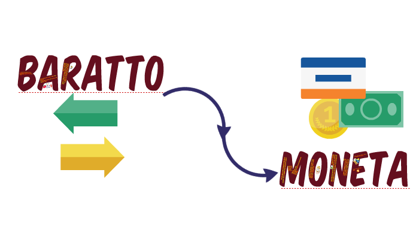

1. La Moneta e il Baratto¶
{kind=link}

Qualunque tipo di mercato c’è sempre un venditore e un acquirente:
il primo cerca di ottenere il massimo dal suo bene, il secondo cerca di pagarlo il meno possibile.
Originariamente non esisteva il pagamento perché non c’era la moneta e quindi l’unica possibilità di commercio è il baratto (scambio di oggetti).
Il baratto ha però dei limiti perché può essere attuato con beni di identico valore e inoltre perché alcuni beni erano difficilmente trasportabili.
Inizialmente è stato superato producendo beni che piacevano a tutti e che erano accettati nello scambio di beni.
Successivamente questi beni sono stati sostituiti da pietre e metalli preziosi.
Ancora dopo i metalli sono state create delle monete, ad arrivare ai tempi moderni con l’uso (senza) metalli preziosi e il valore è deciso dallo stato che lo emette.
Per questa ragione il cittadino deve accettare il pagamento dei beni con la moneta che ha emesso lo stato.
Ogni stato ha un suo livello economico che può essere più o meno elevato: ci sono stati progrediti con un livello molto alto e stati, invece, chiamati in via di sviluppo con un livello economico basso.
1.1 Circolazione della Moneta¶
Come tutti i beni presenti in uno Stato, anche la moneta ha un suo mercato dove ci sono soggetti che la acquistano e la danno.
In generale se ci sono molte transazioni in un sistema, la moneta avrà una velocità di circolazione elevata.
In generale una velocità elevata è tipica dei sistemi espansivi in cui l’economia sta bene e vuole crescere, invece, la politica restrittiva stagna nei mercati con problemi e con crescita ridotta.
La moneta in circolazione viene decisa dal Governo, mentre la sua circolazione dipende dagli intermediari finanziari (coloro che prendono la moneta e la utilizzano).
I principali intermediari sono:
Le BANCHE
Le FINANZIARIE
I FONDI DI INVESTIMENTO